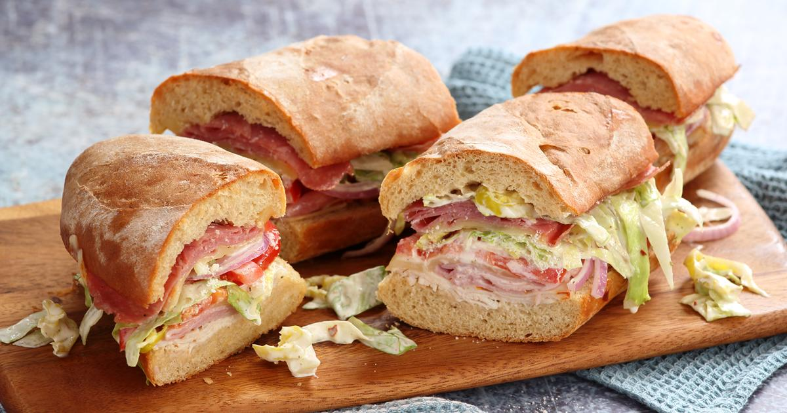

Recipe: Italian Grinder Sandwich
How to make an Italian Grinder Sandwich

Description
The Italian grinder sandwich (called the Guinea grinder once-upon-a-time) is a comfort food classic. The satisfying, meaty creation combines minced onion and fresh basil with shakes of fennel seed and red pepper flakes for a sandwich we come back to over and over again.
It's just one of many favorites folks have plucked from the fair's culinary pages. The Iowa State Fair began as an agriculture and livestock showcase in 1854, welcoming a dairy building, machinery hall, cattle barn, and the now legendary carnival and food vendor midway over the years. Iowa's single largest event has become synonymous with indulgent deep-fried foods on a stick.
Ingredients
- 4 hoagie rolls
- 1/2 pound ground beef
- 1/2 pound ground hot Italian pork sausage
- 8 ounce jar pizza sauce
- 1 tablespoon minced onion
- 1 tablespoon chopped basil
- 1 teaspoon dried oregano
- 1/2 teaspoon salt
- 1/2 teaspoon pepper
- 1/2 teaspoon red pepper flakes
- 4 ounces shredded mozzarella cheese
Steps
- Brown meats together in a pan over medium-high heat until no longer pink. Drain grease.
- Mix onion, basil, oregano, salt, pepper and red pepper flakes into pizza sauce. Add to pan of pork and beef.
- Simmer meat and sauce mixture over medium to low heat for 5 to 10 minutes, stirring regularly.
- Preheat oven to 375 F. Split the hoagie rolls open. Layer each roll with the meat and sauce mixture and mozzarella cheese. Wrap each sandwich individually in foil and bake for 15 minutes in the oven. Serve hot with banana pepper rings as an optional topping.
Go back Home